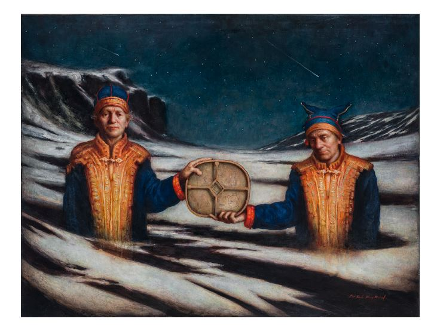

Per Elof Nilsson Ricklund: Mov Gïele | My Voice
This exhibit showcases the vibrant and dynamic work of Sámi artist Per Elof Nilsson Ricklund. With roots in the Sámi cultural landscape and a gaze turned toward philosophy, archaeology, and art history, he creates works that carry both memory and movement. His paintings emerge at the intersection between the silence of nature and the noise of civilization, where art becomes a way to understand both the world around us and the inner world.